Case Study
1. Introduction
1.1 BridgeAPI
BridgeAPI is a free, open-source web developer tool that receives, filters, and forwards HTTP requests. This combination allows developers to set up event-driven workflows in a few simple steps with BridgeAPI as the bridge between apps.
1.2 The API Economy
Propelled by the rise in microservices, cloud computing, the Internet of Things, and the general benefits of integrating diverse business applications, the API space has grown exponentially since the mid-2000s. ProgrammableWeb, a directory that lists public web-based APIs, documented growth of 2000 APIs yearly to more than 23,000 by 2019. [1] Postman, the most used developer API tool, registered a ten-fold rise in API request folders, from 3.1 to 34.9 million between 2017 and 2020. [2] The integral role API requests play in the developing API economy demands developers’ tools to send, receive, monitor, and chain API requests.
1.3 Current Tools
Among developer tools used to send API requests, Postman is by far the most utilized.
Postman 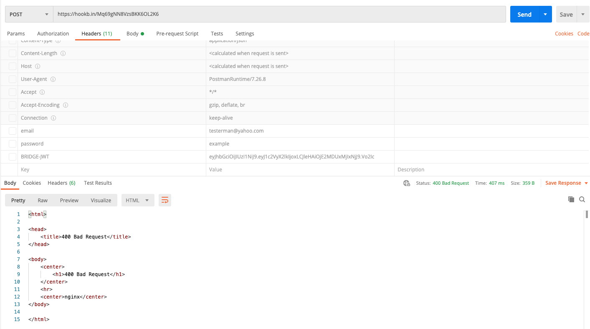It lets users select the request type and endpoint and a host of optional settings, including parameters, headers, and body. It also allows for pre-request scripts, whereby a request can be delayed, or more advanced features like regularly scheduled requests. The response is subsequently rendered with corresponding status, time, size, and body, among other data. Postman is very intuitive to use and practically covers every conceivable aspect of an API request. Yet, it is limited in so far that any workflow involving Postman must originate with a Postman request - making it more useful as a testing tool for an API interface. Any need to integrate workflows triggered by webhooks will, therefore, require other tools.
There are also practical tools to receive API requests.
Hookbin.com is one such tool that provides a URL endpoint to receive webhooks, which can then be inspected upon reception. Users can configure an automatic response that can be hardcoded or include data from the incoming request.
Hookbin.com 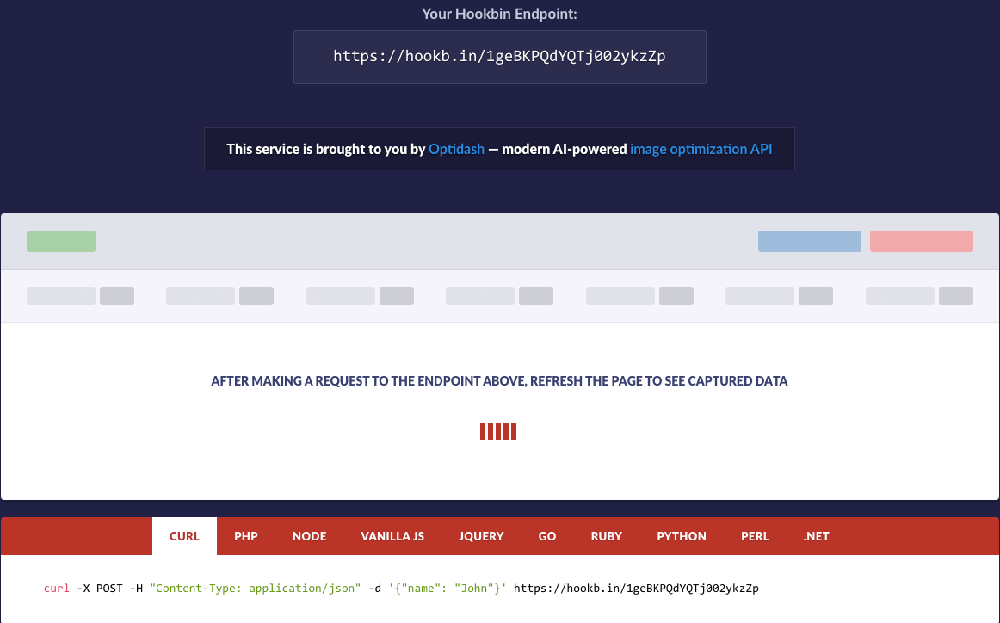Lastly, some apps provide for workflows by providing URL endpoints that, when pinged, trigger a user-defined workflow. Zapier, IFTTT, and Pipedream are examples within this category.
Pipedream 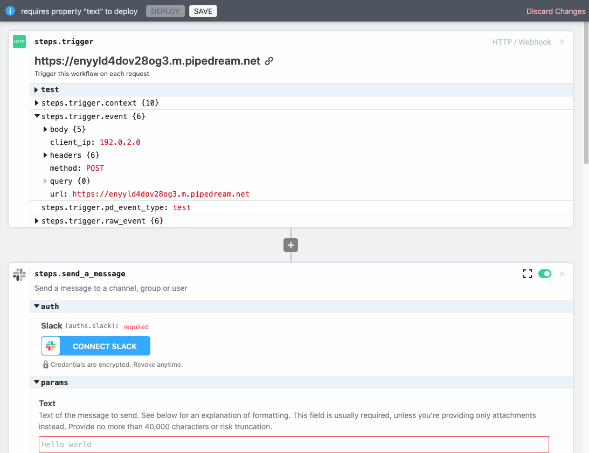 Zapier 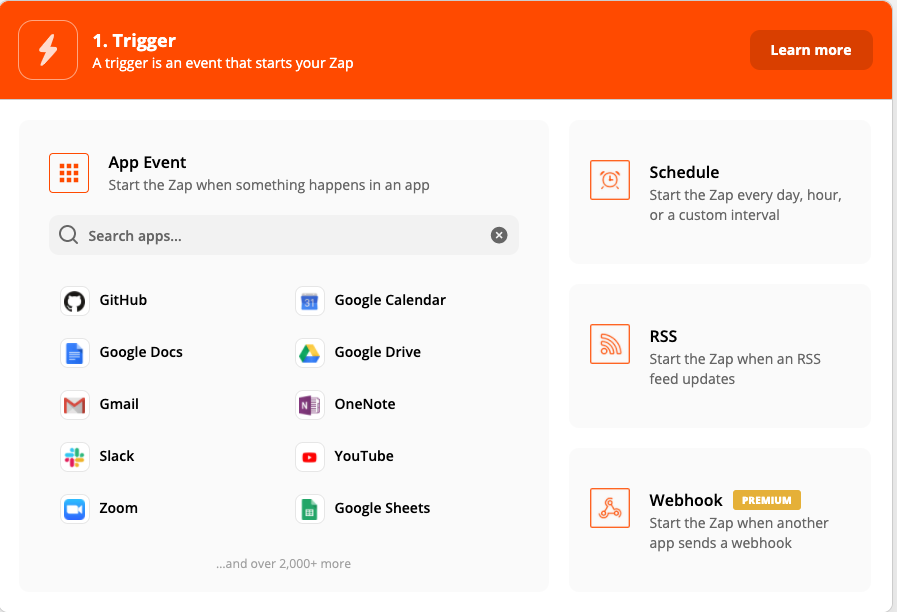These fully-fledged sites are built to integrate large numbers of predefined apps, which are selected with a click and the granting of permission to access the external app from the workflow site. With this access granted, any number of events (not merely webhooks) within the external app can trigger the user-defined workflow. These sites are therefore popular with retail users since the intricacies of API requests are abstracted away. Furthermore, these sites are proprietary, involving a limited free tier and scaled paid tiers.
1.4 BridgeAPI Niche
Within this mapping of the landscape of online API tools, a gap emerges between the pure developer tools and the retail workflow tools. We view BridgeAPI as an attempt to occupy this space as an open-source developer tool to establish workflows. It maintains the simplicity of the purely sending or receiving API developer tools while combining the functionality of both. Similar to the developer tools, BridgeAPI requests no permissions but entrusts the user with configuring the endpoint, headers, and body of an API request. As a functioning workflow tool, BridgeAPI can act as a switchboard to monitor all API-driven single-step workflows between two apps. This ambition framed our user interface as we sought to create an intuitive and simple tool, in accordance with the KISS principle, that nonetheless contains the features necessary to fulfill a developer’s workflow needs. [Visual idea: Table showing features of the different tools]
2. User Experience
2.1 Headers and Settings
The most demanding aspect of the app from the user’s perspective is the workflow configuration, which we refer to as a bridge. The ideal we strived towards was that of a self-explanatory interface, where the headings of each form and field sufficiently guide the user through the setup.
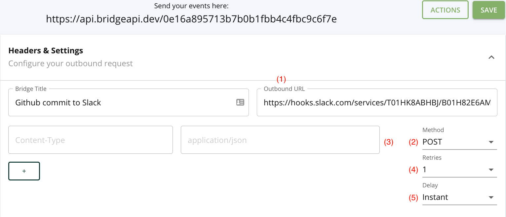In addition to providing a BridgeAPI endpoint, the outbound (forwarding) URL endpoint and method dropdown fields constitute the minimum viable settings for the workflow to function. While any HTTP request can be selected, we set the default to POST as we envision forwarding data in a request body as the most frequent function of a bridge.
The user can set any number of headers, but BridgeAPI is opinionated regarding the content type, which is hardcoded to application/json. The following chart from ProgrammableWeb between March 2018 and March 2020 shows the preponderance of JSON and query strings as the standard data formats for API requests, each accounting for more than ten times the number of APIs accepting XML as the data format. Therefore, we chose not to add XML support for the first iteration of BridgeAPI, given the added complexity required for what would likely be limited use cases.
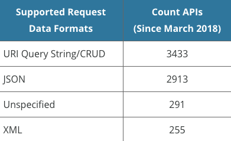Delays and retries are the two optional ‘extras’ in the bridge configuration. A bridge allows for 0, 1, 3, and 5 retries, where a retry is triggered when a response to an outbound request is unsuccessful. We define an unsuccessful request as any request that is either incomplete due to an error or that completed but with a response code equal to or greater than 300. While redirect responses (300s) could be defined as successful, we chose to handle them as unsuccessful to account for temporary redirects, whereby a later retry could conceivably generate a response code in the 200s. The reason we included the retry feature was to let the user set the importance of completing the outbound request so that five retries could be set for consequential bridges or in cases where the receiving API is less reliable. [Visual idea: code snippet for retries functionality].
In addition, users can decide between an instant forwarding of the request or a delay of 15 minutes, 30 minutes, 1 hour, or 1 day. We decided it would be logical for certain workflows to insert a delay between links in a workflow chain. For example, if a user wanted to snooze all forwarding requests of a bridge for a day, the 1 day delay option would ensure that all incoming requests are received and held until the following day. Another advantage is that it gives the user time to abort or deactivate the bridge if circumstances during the delay period call for it. [Visual idea: code snippet - Sidekiq delay call].
When the delay and retry options are combined, the delay period between an unsuccessful request and subsequent retries will grow exponentially with each retry as per the default logic in the background job library applied (Sidekiq). We accept this default logic because the user’s main concern will be the guaranteed delay between the incoming webhook and the first forward request attempt. The delay between retries is of lesser importance. [Visual idea - Sidekiq algorithm for retry intervals].
In order to include sensitive information in the body or headers of an outbound request, we allow the user to store environmental variables.
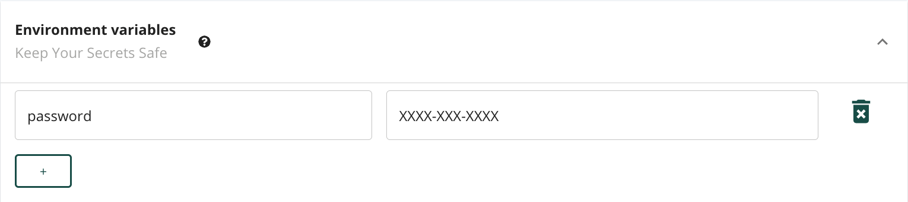Environmental variables are scoped to the bridge rather than at the user level for a couple of reasons. Firstly, there is a high likelihood of variable name collision at the user level for repeating keys such as “password.” Secondly, by defining and inspecting environmental variables on the same form where they are applied, we can better adhere to our straightforward design philosophy and goal of user-friendliness by alleviating the need to navigate to a configuration page to set or recollect them. While it could be slightly inconvenient to duplicate environmental variables for different bridges, we accept this tradeoff as they’re only expected to be set infrequently, typically only once when defining a bridge.
To best protect the data, an environmental variable’s values
will be encrypted and filtered for the UI upon any save
action. They cannot be viewed thereafter, leaving users with
the option of either referencing, deleting, or reassigning
them. For reasons of brevity and familiarity, we selected
$env as the name for referencing the
environmental variable namespace, which users can do either
from the header fields or in the payload. If a “JWT-secret”
key were stored as an environmental variable, it would thus be
accessible using the $env.JWT-secret syntax.
2.2 Payload
GET requests will be useful when users are more interested in assessing responses than in forwarding data. Yet, most bridges are expected to be POST requests and thus require a defined payload in the request body. We contemplated two options for this feature: a two-column table filled out with keys on the left and values on the right. This approach, however, would be complicated by the presence of nested values that would require multiple dropdowns and soon become unwieldy. Therefore, we chose a second option of requiring a raw JSON payload in a code editor since this delivers a cleaner and more manageable interface.
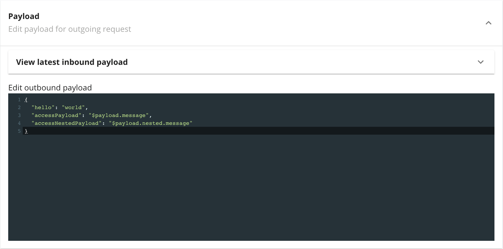
To aid the user, we set a default payload to be edited or
tested as is, along with a JSON linter. The
$payload syntax accesses the inbound request
payload, so in the above example,
$payload.message accesses a
message key at the highest level of the inbound
request payload, while
$payload.nested.message plucks the value
referenced by the message key of the
nested object. As in the header fields,
$env syntax could likewise be applied to
reference environmental variables within the payload.
2.3 Actions
In order to operate as a switchboard for event-driven workflows, users need the option of configuring bridges after saving and activating them. Defining and saving a bridge automatically activates it, whereafter it listens for inbound requests to its endpoint.

Actions to the bridge are all collected within an “Actions” modal one click away. We provide the option of deleting the bridge entirely, toggling the active status (activate and deactivate), or aborting current ongoing requests in the jobs queue - which is made up of requests being delayed, retried, or that still need to be executed. This feature set is simple, yet paired with its neighboring save button for editing, it exhausts all essential configuration needs of a defined bridge.
With this single page, all the necessary fields are provided to define a workflow between two apps. The interface is simple, intuitive, and focused on the essential features, with a couple of add-ons (delays and retries) that provide useful options to the user without adding significant complexity.
3. Frontend Architecture
3.1 NextJS
Frontend frameworks have become an integral part of enterprise web development. We selected NextJS as the optimal framework for building out our React frontend because it leverages the benefits of client-side rendered (CSR) apps, such as responsiveness to user activity and decreased server load, as well as benefits of server-side rendered (SSR) apps such as search engine optimization (SEO) and fast initial page loads. Added advantages include ease-of-use, comprehensive documentation, and an active community. Applying NextJS, our initial page load is server-side rendered while assets and pre-rendered HTML for linked pages are loaded on the client, offering users the experience of a single-page app (SPA). [ Visual idea: diagram showing initial page request and subsequent requests of pre-rendered pages ]
3.2 Payload Editor
A crucial element of the app on the frontend is the functionality and user-friendliness of the payload editor. Since the editor should only support JSON, we had the option of choosing a simple JSON editor for React, such as react-json-editor and react-json-view, or more fully-featured, multi-language-supporting editors such as CodeMirror, Ace, and Monaco. We decided to use an editor that offers multi-language support to ease future extensions to other languages and provide a better IDE experience. We chose CodeMirror, a text editor written in JavaScript for the browser because it is battle-tested, contains the features we sought, yet lighter weight than Ace and Monaco (that power VSCode and Cloud9, respectively), which makes it a better fit for our use cases of rendering multiple code editors on a single page with different purposes. The react-codemirror2 wrapper for React facilitated a smooth integration as a React component. [Visual idea: CodeMirror implementation code snippet ]
The versatility of CodeMirror furthermore lets us configure it as read-only for inspecting past events and editable for configuring a bridge, as well as interfacing it with a form component when needed. Note that CodeMirror does not offer support for Server-Side Rendering (SSR), but as we employ Client Side Rendering (CSR), we can retrieve editor state asynchronously using React’s UseEffect hook in order to avoid slowing down page loads. To improve the user experience, we added a loading spinner displayed in place of each editor until that editor is populated. [ Visual idea: loading spinner ]
The result is an intuitive editor containing aids that users have come to expect from editors like VSCode, including a full-screen mode for expansive payload editing, syntax highlighting, JSON linting, auto-indent, and active line highlighter. [ Visual idea: gif of payload in action showing syntax, linter, active line et al. ]
4. System Architecture
4.1 Background process
We needed a way to process events concurrently without holding up the single-threaded server, and for this, a background processor was required. While Rails ships with ActiveJob, this built-in processor is ill-suited for production since it enqueues jobs in RAM, causing jobs to be cleared if the process is interrupted or if the server is reset.
While a third-party library, Sidekiq is proven to integrate well with Rails and is marketed as “Simple, efficient background processing for Ruby”. It runs concurrently and uses threads to handle simultaneously jobs in the same process. Another reason for choosing Sidekiq is performance, estimated to be up to twenty times faster than alternative background processors. In addition, Sidekiq ships with a monitoring dashboard that lets us view jobs in its queue, ongoing jobs, and other information useful to debugging - a feature that allowed us to develop our business logic quicker than if we were without the dashboard or had to implement one ourselves. The final reason for using Sidekiq is its focus on distributed systems. A single Redis cache - the cache used by Sidekiq - can issue jobs to numerous Sidekiq server instances.
The following diagram illustrates the processing of an event. Once an inbound request arrives, the EventsController inspects that both a valid JSON web token is attached and that the endpoint parameter matches an existing bridge endpoint, in which case it returns an HTTP response with the status code of 202. It then delegates all further business logic to the Sidekiq background process, which promptly pushes a new job to the Redis jobs queue with the id of the newly created Event object. As each job is popped from the jobs queue, an HTTP request object is generated using Ruby’s built-in Net::HTTP library and then sent to the outbound URL endpoint for the bridge to which the event belongs. Lastly, it handles the response and saves it to the database, while, if the response was unsuccessful, it reassigns the job to the jobs queue if further retries are configured.
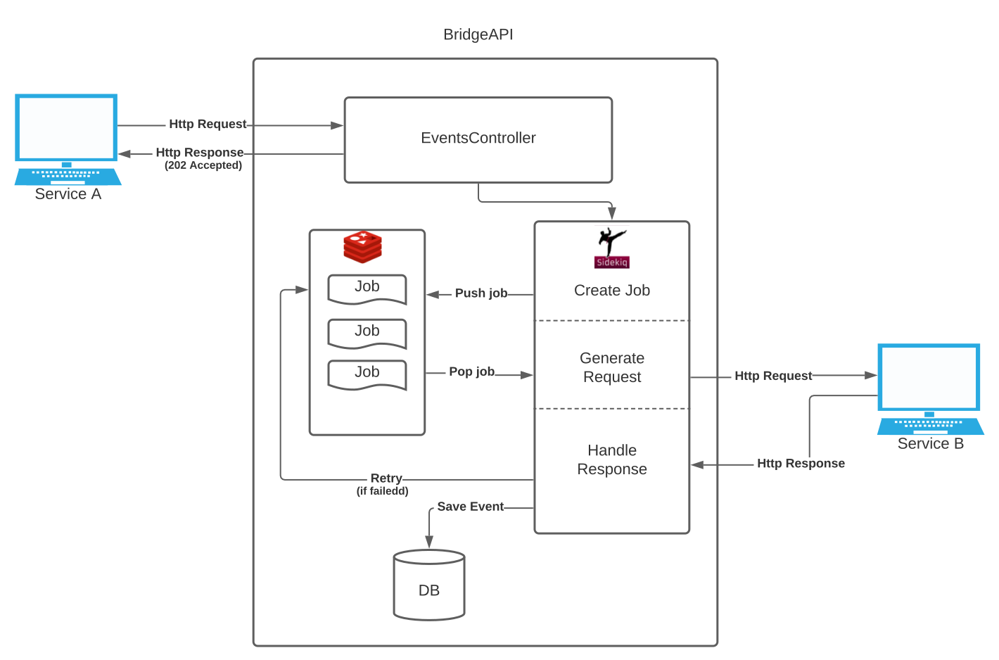The result is a job queue system that runs in tandem with our main Rails API server that can easily scale horizontally and vertically. [ Visual idea: Rails - Sidekiq - Redis interaction ]
4.2 Database Schema
We needed a schema for the database that would let us rapidly retrieve all data related to workflow events yet without overloading the database with queries. Our initial database design envisioned separate tables for most data elements of an event: [ Visual idea: Initial database design ]
An implication of this would have been long join-queries such as: [ Visual idea: hypothetical SQL join statement to gather data for event page ]
Such queries would be challenging to work with, slow to execute, and tax the database needlessly. A better solution was to make use of PostgreSQL’s jsonb data type that stores JSON data. Hstore, which stores data as key-value pairs, would also have been useful data is manipulated after saving to the database since this would not require deserialization. Yet, it would require serialization before sending it, which increases memory usage and costs. Because events in our implementation are never edited and their individual parts never queried, we opted to pool all event data into a single JSON data structure to always be pulled from the database and sent to the frontend as is. [ Visual idea: FCP (First Contentful Paint) - page load metrics ]
The above metric [TODO: import metrics image] shows metric scores for the event page loading in production. First Contentful Paint (FCP) records how soon the first text or images is visible to the user, while Time to Interactive (TTI) measures the time until the page becomes fully interactive. According to statistics from the HTTP Archive, “sites performing in the ninety-ninth percentile render FCP in about 1.5 seconds...TTI in about 2.2 seconds”[4][5], which means that our FCP load of 600 ms and TTI of 1.2 seconds are both faster than 99 percent of websites. This performance can significantly be attributed to the decision to use jsonb.
4.3 Parsing
To implement the app, there were numerous coding challenges related to directing the workflow of a triggered bridge, not least of which was the parsing of outbound headers (to substitute environment variables) and outbound payload (to substitute inbound payload variables and environment variables). In addition, some values must be encrypted - to prevent them from being saved in clear text - and filtered for the user interface.
To parse headers, we inspect for the presence of the
$env indicating environment variables.
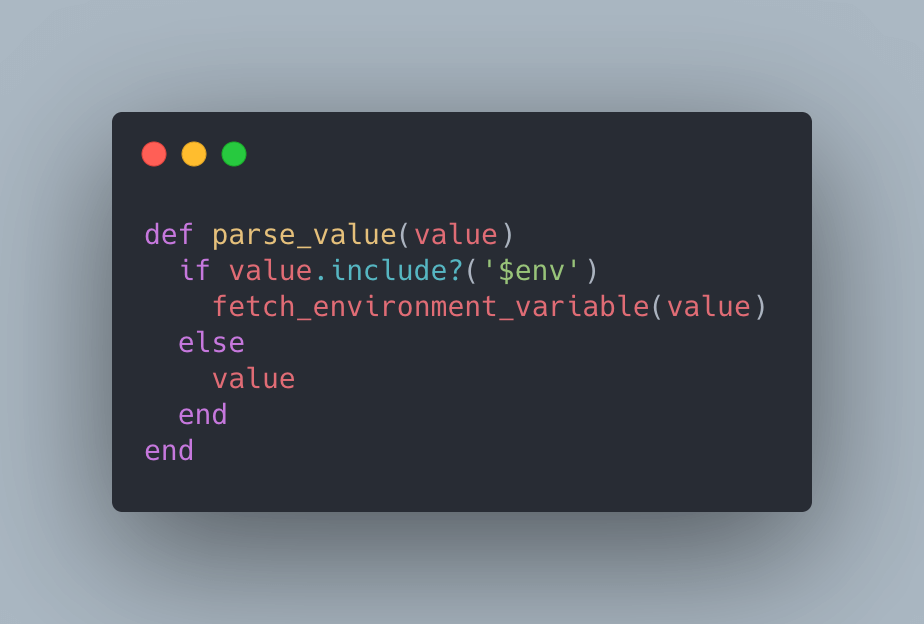
The fetch_environment_variable method then ensures that
$env references an actual key and fetches it from
the database, and decrypts it. To encrypt and decrypt
environment variables, we apply Rails’ built-in
ActiveSupport::MessageEncryptor.

For the payload, we iterate through the raw JSON as
represented by the user_data parameter.
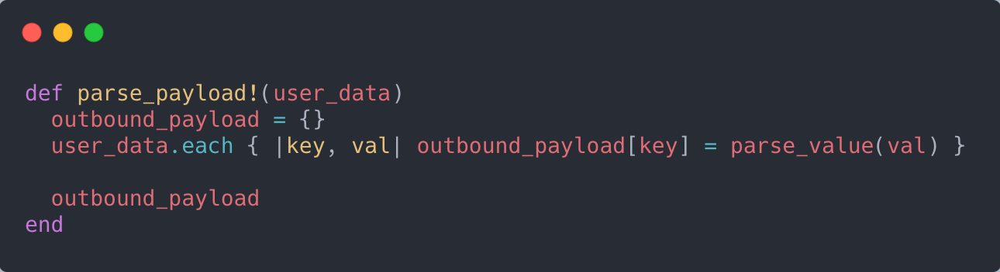
If the value includes a $env string, we pass it
to the same method as with the parsing of headers. If it’s a
hash, we recursively call the
parse_payload! function again, if it’s an array,
we iterate and pass each value to the
parse_payload! function.
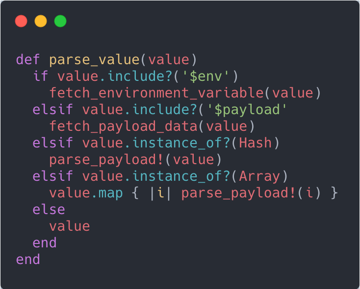
While if it includes $payload, we call a
fetch_payload_data method that returns the
referenced inbound value. To account for possible nested
payload values, we iterate in order to return the value of the
innermost key.
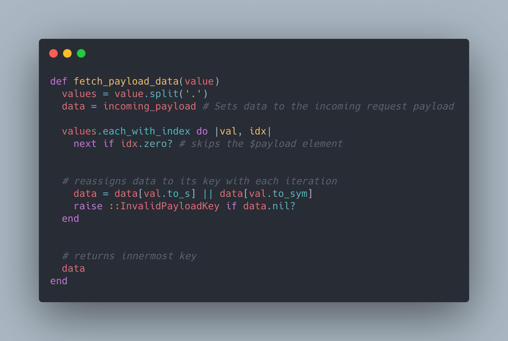
5. Cloud Hosting
[Visual ideas: overall AWS architecture plus detailed diagrams of each part]
5.1 Scaling and costs
A challenge in production was to find a hosting solution that eases future vertical and horizontal scaling while maintaining strict cost control. Scaling vertically, such as adding CPU or memory, would be beneficial if the user-base growth is concentrated in a specific region. In contrast, horizontal scaling through added server instances in other regional data centers could help the app remain performant (through lower latency) to all users if user activity is more globally dispersed. As BridgeAPI is currently maintained by three developers without corporate backing, we also require the app to scale in a cost-efficient manner.
5.2 AWS Elastic Beanstalk
We chose a Platform as a Service (PaaS) in the form of AWS Elastic Beanstalk (EB) to host the API server. With EB it’s possible to scale both vertically and horizontally with only a few clicks. At the same time, monitoring, reporting, health check, and load balancer for distributed systems make it easier for a small team such as ours to manage it. Also, it has transparent, and linear pricing rather than exponential price jumps for common features as reported for other PaaS such as Heroku.[6]
5.3 Redis server
While we tried to apply a serverless solution to the greatest extent possible for cost reasons, our reliance on Sidekiq as a background job processor necessitates a running Redis server in our AWS setup. AWS does offer a serverless key-value cache, DynamoDB, which is similar to Redis, but unfortunately, Sidekiq does not support it. As a result, 60 percent of our costs are estimated to be related to the Redis server since AWS does not offer a serverless Redis cache. Still, we chose to accept this steep proportion given the relatively modest total expenses. Nonetheless, future cost-cutting would likely entail researching replacements for Sidekiq and Redis.
5.4 AWS Aurora
AWS is more accommodating with regards to the database. While we used PostgreSQL in development and had planned to use it in production, we chose AWS Aurora instead as it’s a PostgreSQL-compatible database that supports serverless architectures, allowing us to follow a pay-per-use pricing model. Moreover, using the AWS-native database lets us rely on AWS to handle database scaling and monitoring for us.
5.5 AWS Lambda
Finally, we are able to leverage a serverless service in the form of AWS Lambda for the NextJS frontend, whereby we’re freed from needing to manage servers as AWS Lambda provisions these and tears them down as needed. Our server assets (images, stylesheets, and scripts) are stored in an S3 bucket integrated with AWS Cloudfront CDN, ensuring that our assets can be cached and made available locally from the edge location nearest the user.
5.6 Results
The result has been universally fast loads. Our total cost is estimated to be 20 dollars per month, of which Redis accounts for 12 dollars. We’re also well equipped to handle an increase in load from anywhere as the API server can be replicated to any region within minutes.
Future Work
One avenue of improvement to the user experience is to include multiple data formats for receiving and forwarding requests. Currently, it’s only JSON-compatible, but XML could be extended with minimal effort, although it would deviate slightly from the minimalist aesthetic of the bridge page.
Another idea, drawing from popular sites such as Zapier and Pipedream, is to allow multiple-step workflows instead of the current single-step limit. This would add significant complexity to the app and cause it to depart from the niche position it currently occupies between the single-direction tools and multi-step workflow tools. Still, it could be justified by user demand. In its current iteration, a workaround is to define multiple bridges as endpoints for the same webhook that could thereby trigger numerous actions with the same request - a feasible solution as long as each request is independent of the outcome of other requests. [ Visual idea: workaround in action vs sequential workflow ]
Our Team
Andrew Crotwell
Asheville, NC
William Jackson
Asheville, NC
Angel Ruiz-Bates
Asheville, NC